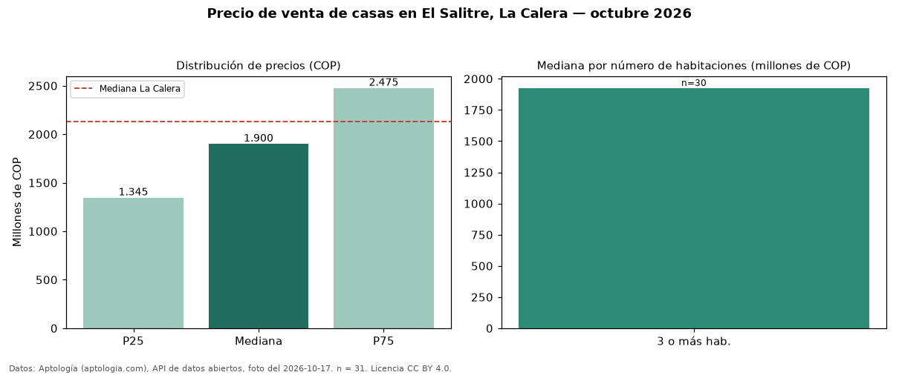

Precio de venta de casas en El Salitre, La Calera — octubre 2026
Con 31 avisos vigentes, el precio mediano de casas en venta en El Salitre, La Calera es COP 1,90 mil millones. Frente al total de La Calera (COP 2,13 mil millones), el barrio está 11 % por debajo. Por mediana, es el puesto 8 de 10 barrios de La Calera con al menos 30 avisos de casas en venta: entre los más económicos. El segmento con más oferta es el de 3 o más habitaciones (30 avisos, mediana COP 1,93 mil millones). 100 % de los avisos incluye parqueadero. La dispersión es moderada: el cuartil superior (COP 2,48 mil millones) es 1,8 veces el inferior (COP 1,34 mil millones). El aviso más barato pide COP 850 millones y el más caro COP 4,20 mil millones. Datos: Aptología (aptologia.com), API de datos abiertos, licencia CC BY 4.0 — https://www.aptologia.com/casas-en-venta/la-calera/el-salitre. Archivos: PDF de 2 páginas, CSV con las cifras y gráfica PNG.

| Avisos únicos | 31 |
|---|---|
| Percentil 25 | COP 1.345.000.000 |
| Mediana | COP 1.900.000.000 |
| Percentil 75 | COP 2.475.000.000 |
Fuente: avisos vigentes de portales inmobiliarios recopilados por Aptología, deduplicados (mínimo 30 avisos únicos por celda). Precios pedidos, no cerrados. Fecha: 2026-10-18.